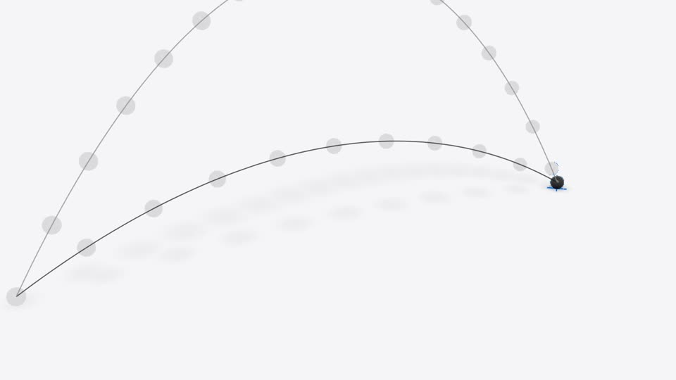

Posicionamento, os 3 primeiros segundos, o que postar até o PAS, o banco de roteiros e como isso vira dinheiro depois.

Esse é o seu lugar. O público que chegou (gente do 3º ano, do fundamental, fazendo ENEM) não te segue porque você ensina melhor que um professor. Te segue porque você é um deles e chegou com uma aula que nenhum colega consegue fazer.
views no primeiro dia, no primeiro post da conta. Quem veio foi estudante, não empreendedor.
mais views em vídeos sobre ENEM no TikTok Brasil em 2025 (3,8 bilhões de jan a out, dado do próprio TikTok).
até o 1º dia do ENEM (8/11). O 2º dia é 15/11 e o PAS 3 é 29/11. O pico de busca é agora.
O TikTok está investindo de propósito em educação no Brasil: criou o programa de aceleração #AprendaNoTikTok (mais de 7 bilhões de views na hashtag) e faz aulões de ENEM em cinema. Em 2025 as publicações sobre ENEM cresceram 5,7× e as views 6,5×. As matérias mais buscadas são redação, português e matemática. Quando a plataforma quer um tipo de conteúdo, ela distribui esse conteúdo. Você caiu do lado certo da onda sem planejar.
Professor no TikTok tem autoridade, mas tem cara de aula. Você tem a mesma idade e a mesma prova do seu público, e uma produção que nenhum professor solo consegue fazer (Manim, 3D, som desenhado). Essa combinação é rara. E você tem uma prova social que quase ninguém mostra: 9,7 e 9,9 nas redações do PAS. Isso, dito por um colega, vale mais que qualquer diploma. Proponho usar com moderação, como prova num vídeo de redação, não como bordão.
ENEM tem milhares de criadores. O PAS da UnB só existe no DF, tem dezenas de milhares de inscritos por etapa e pouca gente fazendo conteúdo bom para ele. Você está dentro dele, faz a etapa 3 em 29/11 e sabe o que cai. Dominar um nicho pequeno é muito mais fácil do que disputar o grande, e o algoritmo também distribui por região. Os conteúdos campeões do PAS 3 são concentrados: geometria analítica (47% da matemática), pós-modernismo (71% da filosofia), funções orgânicas (29% da química). Três aulas animadas sobre isso viram referência em Brasília.
Você mesmo puxou isso: simulador do PhET, GeoGebra, repetição espaçada, NotebookLM, modo estudo do ChatGPT. Tudo é tecnologia que ajuda a passar. Isso também abre a porta para os pais (quem paga cursinho e celular), com vídeos como "seu filho usa IA para colar ou para aprender?". Pais compartilham para os filhos, e isso é alcance grátis.
Um erro de conteúdo numa aula "feita por IA" vira comentário fixado de alguém corrigindo, e mata a credibilidade justamente do que te diferencia. Regra: toda aula que eu fizer passa por duas fontes confiáveis antes de animar, e você dá uma olhada de 1 minuto antes de postar. O selo de conteúdo gerado por IA fica sempre ligado.
Você fez três coisas certas ao mesmo tempo, e cada uma prende um tipo diferente de atenção.
Troque o que está entre colchetes. Os quatro primeiros são do tipo que funcionou com você.
| Modelo de texto na tela | Por que funciona | Série | |
|---|---|---|---|
| 1 | Estudando pro ENEM? Essa aula de [tema] foi feita 100% por IA | Filtro de público + curiosidade. Seu formato campeão. | IA explica |
| 2 | [X]% da [matéria] do ENEM é isso aqui | Número concreto dá urgência e utilidade. | IA explica |
| 3 | Se você só tiver 1 minuto pra estudar [tema], assiste isso | Promete economia de tempo, que é a dor da reta final. | IA explica |
| 4 | Nenhum humano editou esse vídeo | Choque que obriga a olhar de novo. | IA explica |
| 5 | Testei [ferramenta] pra estudar [matéria] e não era o que eu esperava | Quebra de expectativa e honestidade. | Testei |
| 6 | Para de usar o ChatGPT assim pra estudar | Corrige um erro que o público está cometendo. | Testei |
| 7 | Essa ferramenta grátis faz [resultado] em [tempo] | Grátis + resultado + tempo. Público jovem sem dinheiro. | Testei |
| 8 | Pedi pra IA corrigir minha redação nota 9,9. Ela me deu [nota] | Prova real + conflito entre IA e banca. | Testei |
| 9 | Faltam [N] dias pro ENEM e eu vou revisar só isso | Contagem regressiva cria série e volta. | Diário |
| 10 | Meu simulado: [nota]. O que eu mudei depois | Vulnerabilidade com dado real gera identificação. | Diário |
| 11 | Mora no DF? O PAS 3 cobra [tema] quase todo ano | Filtro regional, nicho sem concorrência. | IA explica |
| 12 | Pais: seu filho usa IA pra colar ou pra aprender? | Abre o público dos pais, que compartilham. | Pais |
Um assunto que mais cai, explicado em 1min10 a 2min30 com o padrão da aula de lançamento oblíquo: animação de verdade, fórmula montada na tela, som desenhado. Acima de 1 minuto de propósito, porque é o que conta para a monetização do TikTok mais tarde.
Duas versões: (a) a IA narra, com voz da ElevenLabs, custo seu de zero a 2 minutos; (b) eu explico, a IA anima, você grava só o áudio no celular explicando um assunto que domina (redação, por exemplo) e eu animo em cima. A versão (b) é mais autêntica e cria a sua cara de autoridade.
Limite prático: o plano grátis da ElevenLabs dá uns 10 minutos de voz por mês, perto de 4 aulas. A partir da 5ª aula do mês, usamos a sua voz ou a voz grátis do edge-tts que já funciona aqui.
Você na câmera + gravação de tela. Uma ferramenta, uma tarefa real do seu estudo, um veredito honesto, incluindo quando ela falha. O "falhou" gera mais comentário que o "funcionou". Eu preparo o roteiro em tópicos e os prompts; você grava a tela usando de verdade (10 minutos) e eu edito com zoom, legenda e marcações.
Selfie de 30 a 60 s: nota do simulado, o que vai revisar, como foi a prova. É a série que cria vínculo, porque o público torce por você. Os momentos fortes já estão marcados no calendário: véspera do ENEM, saída de cada dia de prova, véspera do PAS e o resultado. Custo: 2 minutos.
Como você decidiu: um vídeo só, mostrando como a aula foi feita, e fixado no topo do perfil. Ele responde de uma vez a pergunta que todo novo seguidor vai fazer ("como você faz isso?") e você nunca mais precisa repetir. As próximas aulas só dizem "como foi feito: vídeo fixado".
Cada aula animada rende quatro peças: o vídeo principal, dois cortes de 20 a 30 s com o melhor momento (para semanas apertadas), e um carrossel do Instagram feito dos quadros-chave. Por isso dá para postar com constância mesmo em semana de prova.
Terça e quinta às 19h (faixa de 18h às 21h, quando o estudante abre o app depois da aula). A gravação de tudo da semana seguinte acontece num bloco só, domingo à tarde. Se uma semana apertar, entra um corte já pronto e nada para.
| Semana | Terça 19h | Quinta 19h | Extra (opcional) |
|---|---|---|---|
| 5 a 11/10 provas da escola | IA explica Ótica (segunda, 5/10, conforme você quer postar hoje) | Bastidores (vídeo único, fixar no perfil) | Dom 11: gravação da semana (20 min) |
| 12 a 18/10 | Testei NotebookLM transforma seu resumo em podcast e simulado | IA explica Eletrodinâmica, o assunto de Física que mais cai | Sáb: corte da aula de ótica |
| 19 a 25/10 | Testei IA corrigiu minha redação 9,9: comparação com a nota real | IA explica Ecologia: 26% da Biologia do ENEM | Diário meu último simulado |
| 26/10 a 1/11 | Testei Flashcards com IA + repetição espaçada (Anki) | IA explica Matemática básica: porcentagem e proporção em 90 s | Diário faltam 7 dias: o que eu vou revisar |
| 2 a 8/11 ENEM dia 1 | IA explica Revisão relâmpago: os 5 de Natureza (montagem das aulas já feitas) | Pais 5 coisas que ajudam seu filho na véspera | Sáb 7: Diário véspera · Dom 8: saída da prova |
| 9 a 15/11 ENEM dia 2 | IA explica Termologia ou Estatística (para o dia 2) | Corte da aula de Eletrodinâmica | Dom 15: Diário saída do dia 2 |
| 16 a 22/11 só PAS | IA explica PAS 3: geometria analítica (47% da matemática) | IA explica PAS 3: pós-modernismo em 2 min | Corte para Brasília |
| 23 a 29/11 PAS dia 29 | IA explica PAS 3: funções orgânicas | Diário véspera do PAS | Dom 29: saída do PAS |
Datas oficiais: ENEM 8/11 e 15/11 (edital Inep nº 64/2026); PAS etapa 3 em 29/11 (edital UnB/Cebraspe). O dia exato do Diário depende de você; se não quiser gravar na saída da prova, eu publico um corte no lugar.
| Etapa | Você | Eu (Claude) |
|---|---|---|
| Escolher o tema | Escolhe do banco (ou aceita a sugestão da semana) | Proponho 2 opções toda sexta, com gancho pronto |
| Roteiro | Nada | Escrevo, confiro o conteúdo em duas fontes e sincronizo com a fala |
| Gravação (domingo, 20 a 30 min) | Ganchos de rosto (5 s cada), telas do "Testei", áudio do "eu explico" quando houver | Te mando a lista exata do que gravar, como fizemos no bastidores |
| Edição | Nada | Animação, voz, música, efeitos, legenda, texto em cima, cortes, carrossel |
| Aprovação | 1 minuto: assistir e dizer ok ou ajuste | Quadros-chave antes do render só nas aulas grandes |
| Postagem | Postar com a descrição que eu escrevo e o selo de IA ligado | Descrição, hashtags, comentário fixado e crédito da música |
| Medir (5 min, domingo) | Me manda print das estatísticas dos posts da semana | Leio e ajusto o próximo calendário |
Quantos passaram do gancho. Se cair, o problema é o quadro 1 ou o texto em cima.
O sinal mais forte para conteúdo de estudo. Aula boa é aula salva para revisar.
Mostra qual série constrói o perfil, e não só o que viraliza uma vez.
Regra de decisão: depois de 4 semanas, a série com mais salvamentos ganha mais espaço no calendário. Não decidimos por views, porque views sozinhas enganam.
Percentuais: participação do assunto dentro da matéria nas provas do ENEM de 2016 a 2025 (levantamento Aprova Total) e do PAS 3 de 2021 a 2025 (levantamento COC). "Seu tempo" é o que custa de você.
| Tema | Gancho | Seu tempo | |
|---|---|---|---|
| A IA explica ENEM, pelos assuntos que mais caem | |||
| 1 | Eletrodinâmica (21% de Física) | O assunto de Física que mais cai no ENEM, em 2 minutos | 0 a 2 min |
| 2 | Ecologia (26% de Biologia) | 1 em cada 4 questões de Biologia é isso aqui | 0 a 2 min |
| 3 | Matemática básica (37%) | Mais de um terço da prova de Matemática é conta de 7º ano | 0 a 2 min |
| 4 | Estatística: média, moda, mediana | A questão de estatística que todo ano derruba gente | 0 a 2 min |
| 5 | Termologia (16% de Física) | Por que a panela queima e o cabo não? Física do ENEM | 0 a 2 min |
| 6 | Ondulatória (14% de Física) | Essa aula de ondas foi feita 100% por IA | 0 a 2 min |
| 7 | Estequiometria | A regra de três que resolve metade da Química | 0 a 2 min |
| 8 | Geometria espacial (11%) | Volume de cilindro que você nunca mais esquece | 0 a 2 min |
| 9 | Filosofia antiga (28%) | Platão em 90 segundos, do jeito que o ENEM cobra | 0 a 2 min |
| 10 | Brasil Colônia / Estado Novo | Vargas em 2 minutos: o que cai e o que é enfeite | 0 a 2 min |
| 11 | Redação: estrutura nota alta | Tirei 9,9 na redação do PAS. Essa é a estrutura | 5 min (sua voz) |
| A IA explica PAS 3, o nicho de Brasília | |||
| 12 | Geometria analítica (47%) | Mora no DF? Quase metade da Matemática do PAS 3 é isso | 0 a 2 min |
| 13 | Pós-modernismo (71% da Filosofia) | O tema que está em 7 de cada 10 questões de Filosofia do PAS 3 | 0 a 2 min |
| 14 | Funções orgânicas (29%) | Química do PAS 3: decora isso e ganha ponto | 0 a 2 min |
| 15 | Genética (líder em Biologia) | Cruzamento genético desenhado na tela, passo a passo | 0 a 2 min |
| Tema | Gancho | Seu tempo | |
|---|---|---|---|
| Testei pra você tecnologia que ajuda a passar | |||
| 16 | NotebookLM (Google, grátis) | Joguei meu resumo de Biologia aqui e virou um podcast | 10 min |
| 17 | IA corrigindo redação | Pedi pra IA corrigir minha redação 9,9. Olha a nota que ela deu | 10 min |
| 18 | Modo estudo do ChatGPT vs resposta pronta | Para de pedir a resposta pra IA. Faz isso no lugar | 10 min |
| 19 | Anki + flashcards gerados por IA | 200 flashcards em 5 minutos, e o app decide quando revisar | 10 min |
| 20 | PhET (simuladores grátis da Univ. do Colorado) | O site grátis que deixa você brincar com a Física do ENEM | 10 min |
| 21 | GeoGebra / Desmos | Vê a função mudando enquanto você mexe: isso devia ser obrigatório | 10 min |
| 22 | Google Lens / fotografar questão | Fotografar a questão te ajuda ou te atrapalha? Testei | 10 min |
| Diário e Pais | |||
| 23 | Meu plano de estudo da reta final | Matemática 40%, Natureza 35%: como eu divido minha semana | 2 min |
| 24 | Pais e IA | Pais: seu filho usa IA pra colar ou pra aprender? Como saber | 5 min |
Até 29/11 o único objetivo é audiência e confiança. Vender antes disso troca seguidores por trocados e rouba seu tempo de estudo. Depois, a escada é esta:
O Programa de Recompensas para Criadores do TikTok paga por vídeos acima de 1 minuto e exige 10 mil seguidores, 100 mil views nos últimos 30 dias e 18 anos completos. As aulas já nascem acima de 1 minuto por isso. É dinheiro pequeno, mas é o sinal de que o perfil está de pé.
Edtechs, cursinhos e apps de estudo pagam por publi com quem fala com estudante. O TikTok também tem o programa de aceleração #AprendaNoTikTok para criadores de educação. Regra de ouro: só divulga o que você testaria no "Testei pra você", com a mesma honestidade, senão a série perde valor.
Aqui está a conexão principal deste documento. Quem assiste é estudante, mas quem paga por uma aula animada é professor e cursinho. Professor que cria conteúdo precisa de exatamente o que você já tem: aula animada com qualidade de estúdio em poucos dias. Cada vídeo seu é um portfólio público. Proposta concreta para dezembro: um pacote "aula animada pronta" por assunto, vendido para professores do TikTok e cursinhos do DF. Isso junta as duas trilhas do nosso projeto (a máquina de edição e o seu perfil) num negócio só.
Com audiência e dados de quais aulas são mais salvas: um pacote de revisão animada PAS/ENEM do próximo ciclo, ou um mini-curso "estudar com IA sem colar", lançado em pré-venda para validar antes de produzir. O curso de edição com IA continua uma boa ideia, mas para outro público (criadores); entra depois, como já combinamos.
Datas do ENEM 2026: Inep, edital nº 64/2026, via memorizevestibular.com.br/blog/artigos/quando-e-o-enem-2026 e otempo.com.br.
PAS etapa 3 em 29/11/2026: Correio Braziliense (correiobraziliense.com.br, editais PAS 2026) e blogdovestibular.com.
Assuntos que mais caem no ENEM (2016-2025): aprovatotal.com.br/assuntos-mais-cobrados-no-enem.
Assuntos campeões do PAS 3 (2021-2025, levantamento COC): Correio Braziliense, "O que cai no PAS da UnB".
Crescimento de conteúdo de ENEM e #AprendaNoTikTok: newsroom.tiktok.com (programa de aceleração), meioemensagem.com.br, acessa.com (março de 2026).
Visualizações do primeiro post: relato do Vitor no projeto.